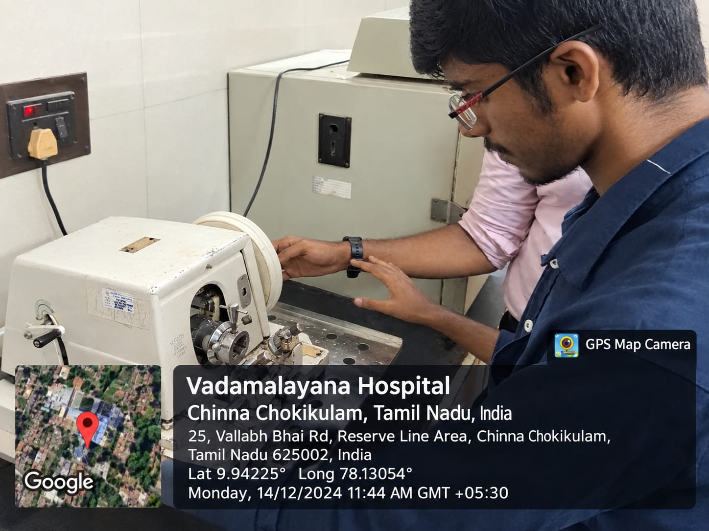
01 / HOSPITAL TRAININGCLINICAL EXPOSURE↗
Vadamalayan Hospitals Pvt. Ltd.
Exposure to the hospital environment and the role of biomedical equipment in supporting clinical workflows and patient care.
View training document ↗Building at the intersection of biomedical devices, embedded systems and healthcare technology — one prototype, one lesson, one iteration at a time.
A LITTLE ABOUT ME
I'm Prathosh, a Biomedical Engineering student at Sethu Institute of Technology with a growing interest in turning engineering ideas into useful healthcare technology.
I work on student prototypes that connect sensors, embedded systems, biomedical instrumentation and software. I'm especially interested in medical-device development, clinical engineering, biomedical manufacturing and quality, and healthcare AI. My aim is to keep learning through hands-on projects, hospital exposure and innovation programmes.
Sethu Institute of Technology · Pre-final year
Sairam Matric Hr. Sec. School
LEARNING IN REAL SETTINGS
Each project, hospital visit and innovation event adds another layer to how I think about medical technology.

01 / HOSPITAL TRAININGExposure to the hospital environment and the role of biomedical equipment in supporting clinical workflows and patient care.
View training document ↗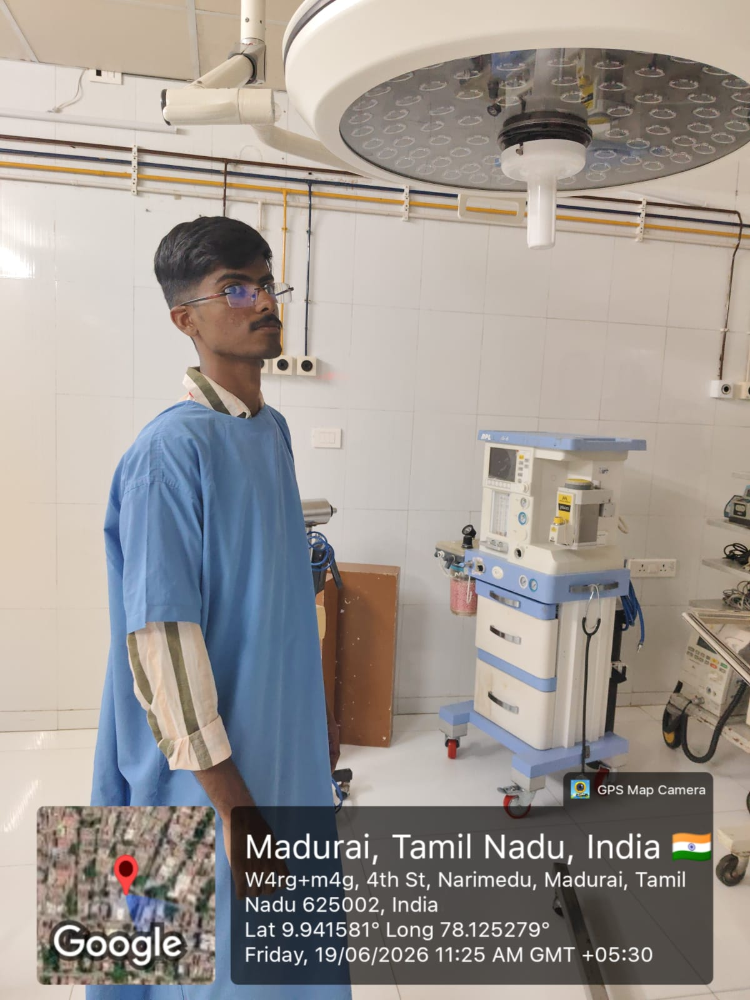
02 / HOSPITAL TRAININGDeveloping familiarity with clinical settings, equipment reliability and the importance of safety-conscious biomedical practice.
View training document ↗Exploring an ambient-light and occupancy-aware lighting concept for study and work environments.
Building familiarity with ECG signal acquisition, local waveform display and embedded connectivity.
Collaborating with teammates, presenting ideas and learning how early-stage concepts move forward.
TOOLS I'M LEARNING WITH
A growing set of skills for building, testing and understanding biomedical technology.
Python · C · C++ · MATLAB · Scilab
Machine Learning fundamentals · OpenCV · Biomedical Signal Processing
Arduino · ESP32 · Raspberry Pi · Sensors · OLED displays
Biomedical Instrumentation · Medical-device concepts · Clinical engineering awareness · Patient safety
SELECTED BUILDS & EXPERIMENTS
Student projects in different stages of concept development and prototyping. Select a project to explore its details.
Intelligent Eye Fatigue Regulation Through Adaptive Illumination Control
An adaptive lighting concept using ambient illumination and occupancy sensing to explore more comfortable lighting conditions in study and work environments.
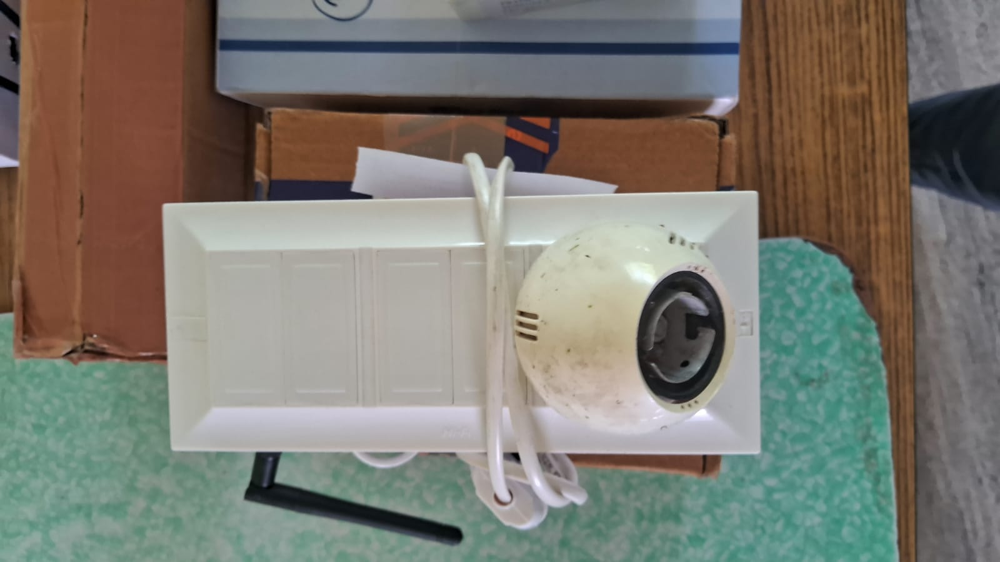
EYEZEN / 01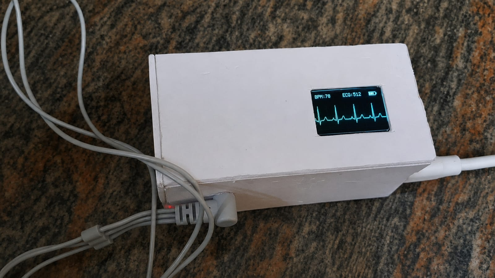
02 / BIOMEDICAL IoT↗Portable ECG waveform monitoring prototype.
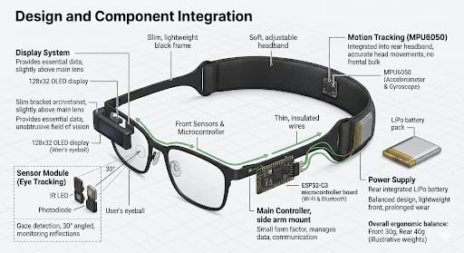
03 / WEARABLE CONCEPT↗Spectacle-style eye-health monitoring concept.
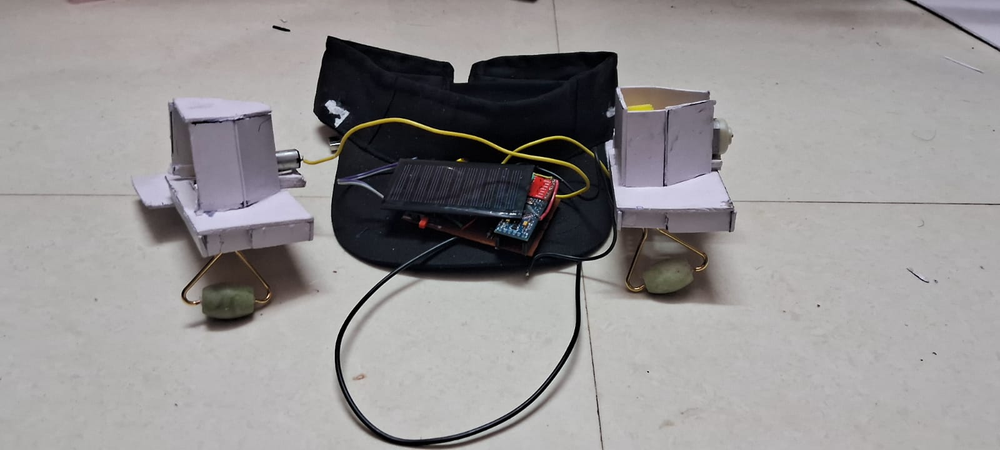
04 / SECOND-YEAR PROJECT↗Biomedical therapeutic-device concept focused on user comfort.
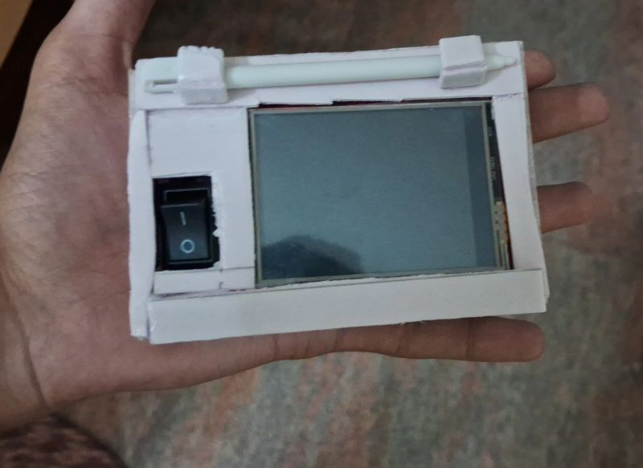
05 / INTERACTIVE SYSTEM↗Rule-based healthcare assistant using a display and local responses.
ACTIVE PROJECT JOURNAL
I'm exploring how ambient-light sensing and occupancy detection can inform an adaptive lighting setup. The focus is on developing the prototype, understanding its limits and improving it through iterative testing — not claiming a clinically validated outcome.
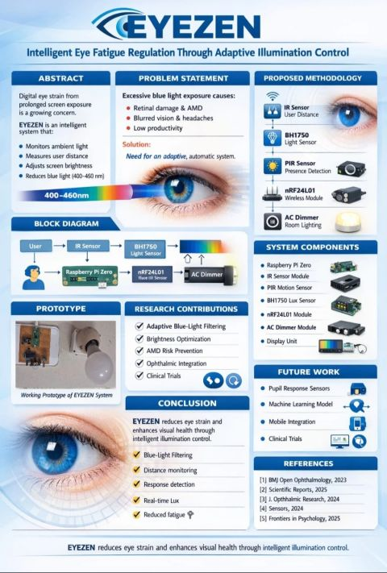
MOMENTS THAT KEEP ME MOVING
Academic recognition, innovation programmes and teamwork have helped me keep exploring what biomedical engineering can do.
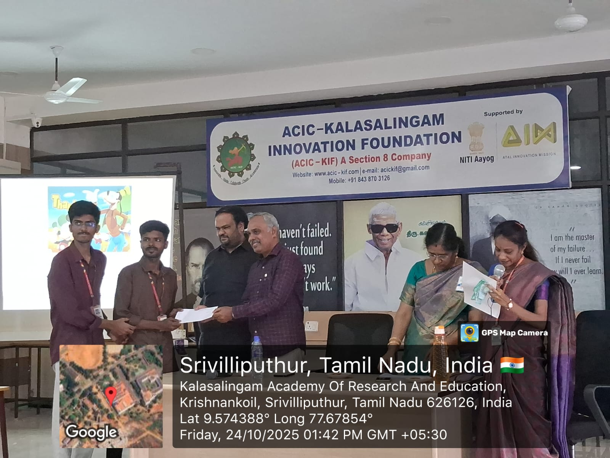
01 / PROJECT EXPOKalasalingam University
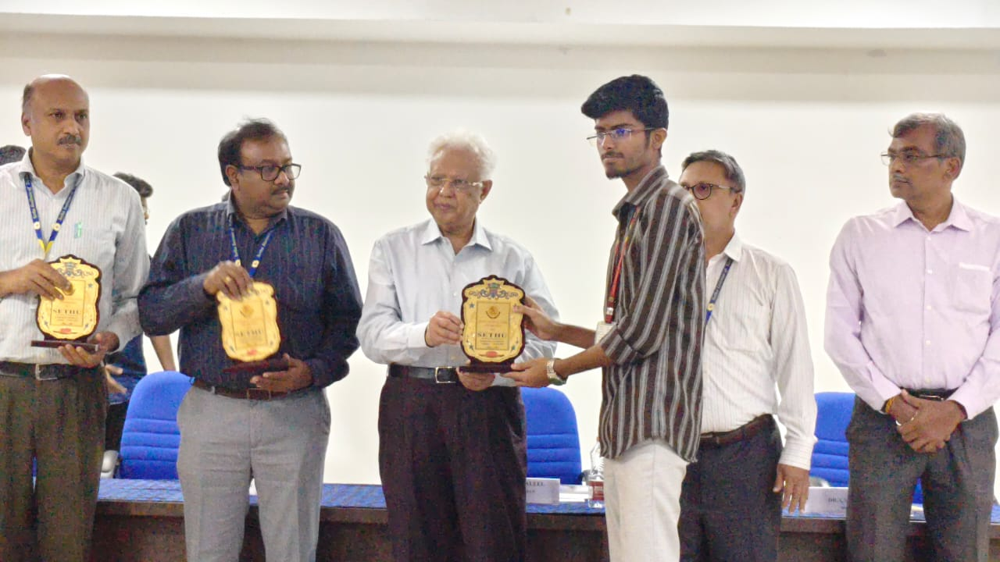
02 / RECOGNITIONSethu Institute of Technology
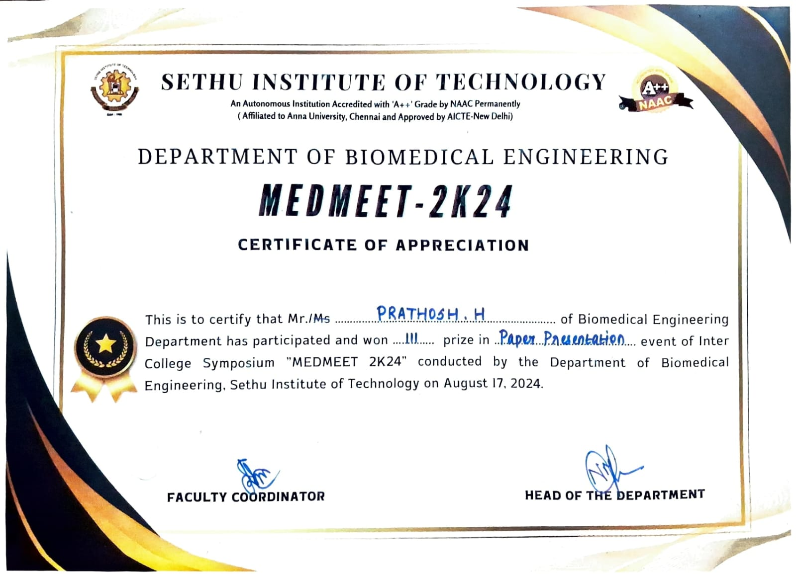
03 / PRESENTATIONAcademic presentation
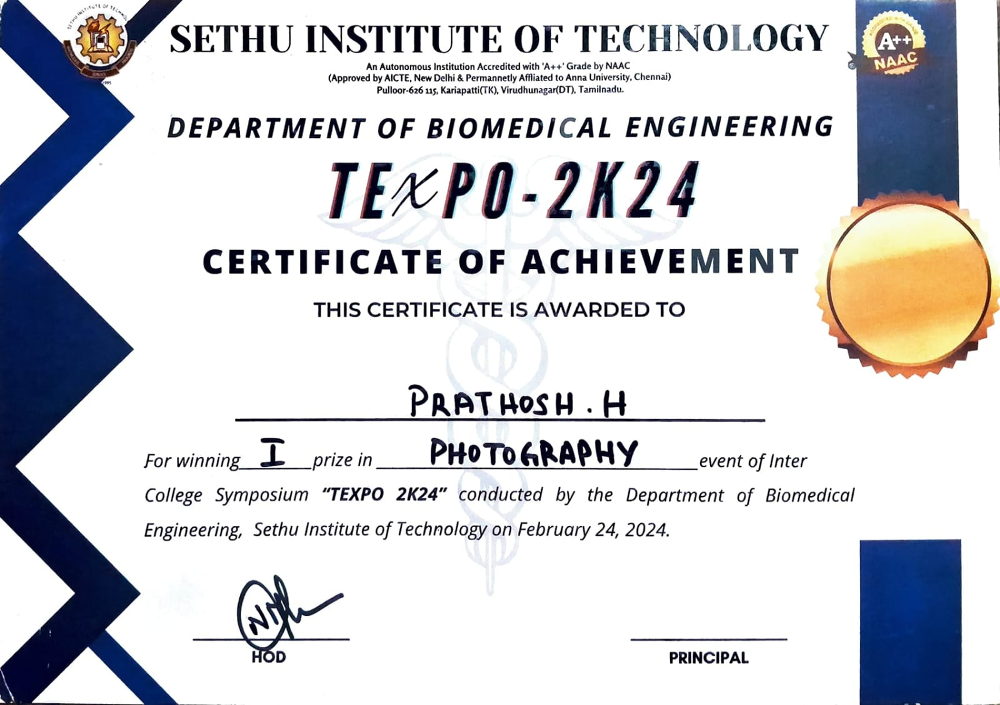
04 / CREATIVE WORKCreative work beyond engineering
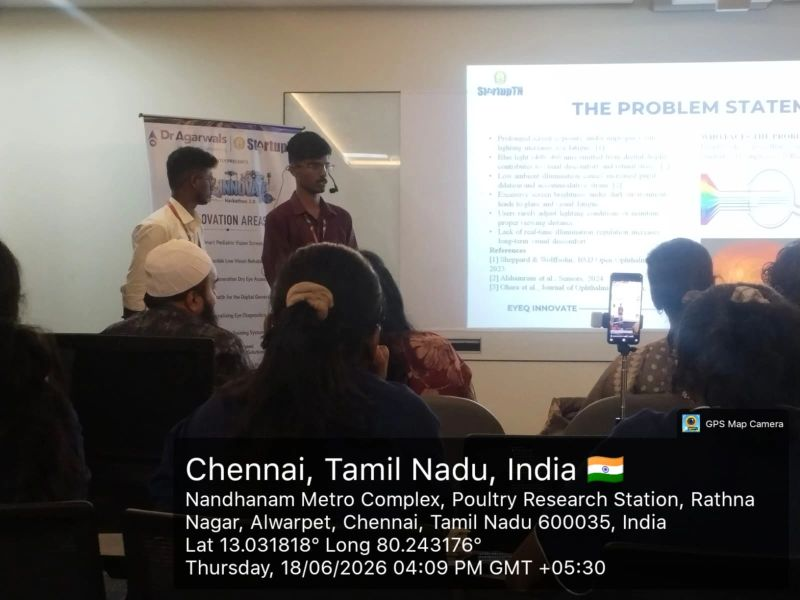
Team MEDINTEL · EYEZEN adaptive illumination concept
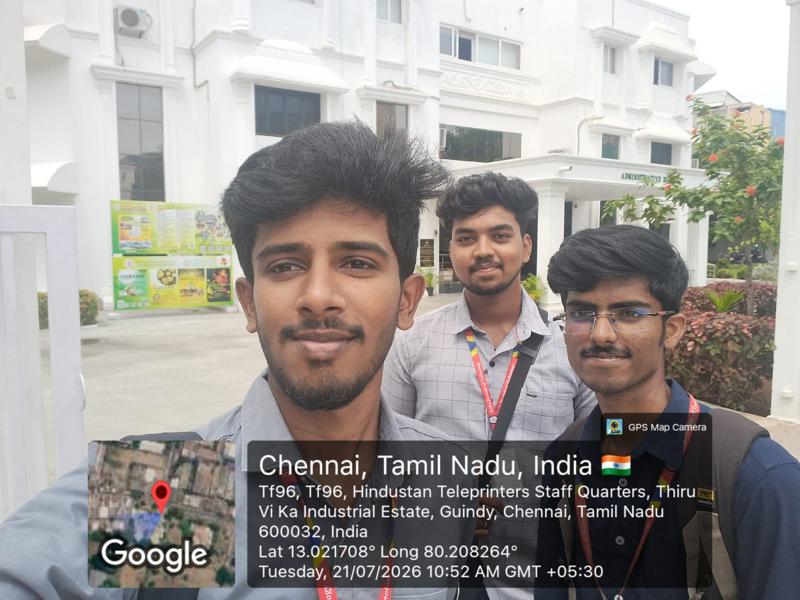
WHAT I'M EXPLORING
Ideas and principles guiding my learning — not claims of finished clinical products.
Understanding the environment, the workflow and the person using a device is as important as choosing the sensor.
See the prototypes ↗Build small, measure what happens, document the limitations and use the results to make the next iteration better.
See what I'm building ↗Biomedical devices need thoughtful testing, clear limits and a safety-first mindset before real-world use.
Explore my interests ↗HAVE AN OPPORTUNITY OR AN IDEA?
Open to biomedical engineering internships and entry-level learning opportunities in medical devices, clinical engineering, biomedical manufacturing, production / quality control and healthcare AI.
hprathosh1@gmail.com